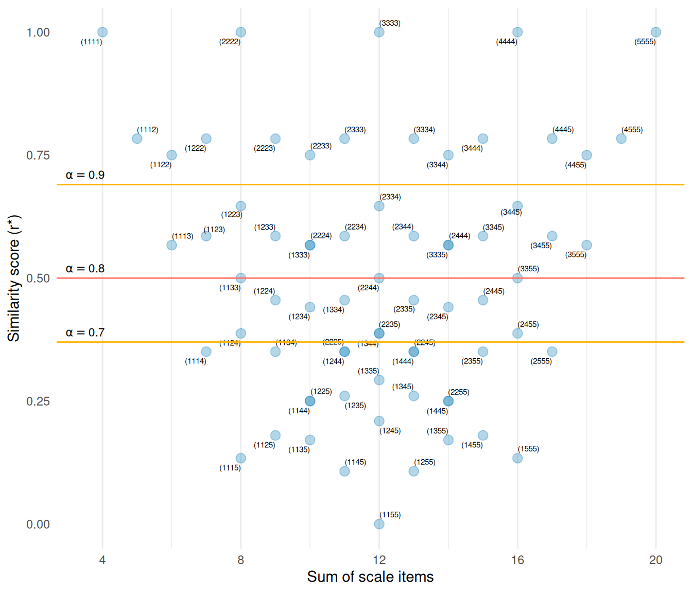

Reconstructing Likert Items from Scale Scores with a Target Reliability
In many situations researchers have access to scale scores but not the individual item responses that produced them. For example, published studies often report only summary statistics, simulation studies may require synthetic item data, and teaching examples may benefit from realistic item responses. Generating such data is not straightforward because the reconstructed items must satisfy two constraints simultaneously: the item values must sum to the observed scale score, and the items should exhibit a desired level of reliability.
The makeItemsScale() function addresses this problem by reconstructing plausible Likert-style item responses whose sums reproduce the supplied scale scores while approximating a target Cronbach’s alpha. The algorithm achieves this by selecting candidate item combinations whose dispersion corresponds to the inter-item correlation implied by the desired reliability.
Reconstructed item-level Likert responses must satisfy two constraints:
- The item values must sum to a given scale score.
- The items should exhibit a desired reliability (Cronbach’s ).
Quick example:
The short dataset in Table 1 shows a four-item 5-point Likert scale, myScale for which we want to produce scale items that match the scores in the dataset and have Cronbach’s alpha of 0.80. This result is achieved in the four columns, V1 ... V4 which average to equal the corresponding values in myScale.
Show the code
n <- 16
mean <- 3
sd <- 1.0
lower <- 1
upper <- 5
k <- 4
target_alpha <- 0.8
df <- data.frame(
myScale = lfast(
n = n, mean = mean, sd = sd,
lowerbound = lower, upperbound = upper,
items = k
)
)
myItems <- makeItemsScale(
scale = df,
lowerbound = lower,
upperbound = upper,
items = k,
alpha = target_alpha,
summated = FALSE
)
myAlpha <- alpha(, myItems) |> round(4)
df <- cbind(df, myItems)
knitr::kable(df)| myScale | V1 | V2 | V3 | V4 |
|---|---|---|---|---|
| 1.00 | 1 | 1 | 1 | 1 |
| 4.00 | 3 | 5 | 3 | 5 |
| 2.25 | 2 | 4 | 1 | 2 |
| 3.75 | 2 | 4 | 4 | 5 |
| 3.00 | 4 | 4 | 2 | 2 |
| 2.50 | 1 | 3 | 2 | 4 |
| 2.50 | 3 | 4 | 1 | 2 |
| 4.00 | 3 | 5 | 3 | 5 |
| 4.25 | 3 | 5 | 5 | 4 |
| 2.50 | 3 | 4 | 1 | 2 |
| 3.00 | 4 | 4 | 2 | 2 |
| 3.00 | 2 | 4 | 2 | 4 |
| 4.25 | 4 | 5 | 3 | 5 |
| 2.75 | 3 | 3 | 1 | 4 |
| 4.00 | 3 | 5 | 3 | 5 |
| 1.25 | 1 | 1 | 2 | 1 |
Here, the resulting Cronbach’s alpha = 0.7995, so the synthetic data are correct to two decimal places. Not bad for just 16 observations! (Actually, number of observations has little to do with alpha)
The makeItemsScale() function generates such data by selecting candidate item combinations whose dispersion matches the correlation structure implied by the target reliability.
The key idea is that rows with similar item values produce stronger correlations between items, while rows with widely varying values produce weaker correlations.
Relationship between reliability and correlation
Cronbach’s alpha depends on the average inter-item correlation:
where
- = number of items
- = mean inter-item correlation.
Rearranging gives the correlation implied by a desired reliability:
Example
Suppose we want
- 4 items
- target = 0.80
Then
Typically, we would formalise this calculation with a function.
Show the code
alpha_2_r <- function(target_alpha, k) {
mean_r <- target_alpha / (k - target_alpha * (k - 1))
return(mean_r)
}So the reconstructed items should exhibit an average correlation of approximately .
Candidate rows
The algorithm first generates all possible item combinations within the response bounds.
For a 4-item 1–5 scale, there are 70 possible rows (aka: combinations with replacement), as shown in Table 2.
Show the code
#|
lower <- 1
upper <- 5
k <- 4
candidates <- gtools::combinations(
v = c(lower:upper),
r = k,
n = length(c(lower:upper)),
repeats.allowed = TRUE
) |>
data.frame()| X1 | X2 | X3 | X4 | |
|---|---|---|---|---|
| 1 | 1 | 1 | 1 | 1 |
| 2 | 1 | 1 | 1 | 2 |
| 3 | 1 | 1 | 1 | 3 |
| 4 | 1 | 1 | 1 | 4 |
| 5 | 1 | 1 | 1 | 5 |
| 6 | 1 | 1 | 2 | 2 |
| 7 | … | … | … | … |
| 65 | 3 | 5 | 5 | 5 |
| 66 | 4 | 4 | 4 | 4 |
| 67 | 4 | 4 | 4 | 5 |
| 68 | 4 | 4 | 5 | 5 |
| 69 | 4 | 5 | 5 | 5 |
| 70 | 5 | 5 | 5 | 5 |
A scale made from six 5-point items has 210 possible combinations. A scale made from three 7-point items has 84 possible combinations.
Each candidate row represents a possible pattern of item responses.
Each row sums to a value that could be appear in a summated scale. Similarly, each row shows variation in its values, as measured by the row standard deviation
Rows with small contain similar item values, implying stronger correlations.
Rows with large contain more varied values, implying weaker correlations.
| X1 | X2 | X3 | X4 | sum | sd | |
|---|---|---|---|---|---|---|
| 1 | 1 | 1 | 1 | 1 | 4 | 0 |
| 2 | 1 | 1 | 1 | 2 | 5 | 0.5 |
| 3 | 1 | 1 | 1 | 3 | 6 | 1 |
| 4 | 1 | 1 | 1 | 4 | 7 | 1.5 |
| 5 | 1 | 1 | 1 | 5 | 8 | 2 |
| 6 | 1 | 1 | 2 | 2 | 6 | 0.5774 |
| 7 | … | … | … | … | … | … |
| 65 | 3 | 5 | 5 | 5 | 18 | 1 |
| 66 | 4 | 4 | 4 | 4 | 16 | 0 |
| 67 | 4 | 4 | 4 | 5 | 17 | 0.5 |
| 68 | 4 | 4 | 5 | 5 | 18 | 0.5774 |
| 69 | 4 | 5 | 5 | 5 | 19 | 0.5 |
| 70 | 5 | 5 | 5 | 5 | 20 | 0 |
Similarity index
To relate row dispersion to correlation, the algorithm converts the standard deviation into a similarity index
where
- = row standard deviation
- = maximum dispersion observed among candidate rows.
This transformation maps dispersion onto a scale between (low similarity) and (high similarity).
The similarity index is calculated using the maximum dispersion observed across all possible item combinations within the response range.
Rows with similar values therefore have large
Show the code
s_max <- max(candidates$sd)
candidates$similar <- 1 - candidates$sd / s_max| X1 | X2 | X3 | X4 | sum | sd | similar | |
|---|---|---|---|---|---|---|---|
| 1 | 1 | 1 | 1 | 1 | 4 | 0 | 1 |
| 2 | 1 | 1 | 1 | 2 | 5 | 0.5 | 0.7835 |
| 3 | 1 | 1 | 1 | 3 | 6 | 1 | 0.567 |
| 4 | 1 | 1 | 1 | 4 | 7 | 1.5 | 0.3505 |
| 5 | 1 | 1 | 1 | 5 | 8 | 2 | 0.134 |
| 6 | 1 | 1 | 2 | 2 | 6 | 0.5774 | 0.75 |
| 7 | … | … | … | … | … | … | … |
| 65 | 3 | 5 | 5 | 5 | 18 | 1 | 0.567 |
| 66 | 4 | 4 | 4 | 4 | 16 | 0 | 1 |
| 67 | 4 | 4 | 4 | 5 | 17 | 0.5 | 0.7835 |
| 68 | 4 | 4 | 5 | 5 | 18 | 0.5774 | 0.75 |
| 69 | 4 | 5 | 5 | 5 | 19 | 0.5 | 0.7835 |
| 70 | 5 | 5 | 5 | 5 | 20 | 0 | 1 |
Selecting candidate rows
For each candidate row we compute the absolute difference between the target mean correlation coefficient and the row similarity score.
where
- = row similarity
- = target mean correlation.
Rows whose similarity index is closest to the target correlation are preferred.
Visual explanation of candidate selection
Figure 1 shows all 70 possible combinations of four 5-point items. Each point represents one combination of four items, arranged by the sum of items and the similarity score. Sum-of-items ranges from ‘4’ 1111 to ‘20’ 5555, and the similarity score ranges from ‘0’ (minimum similarity/ maximum variance - here representing 1155 to ‘1’ (perfect similarity/ zero variance). Note the five points at the top, at similarity = ‘1’ that represent the combinations where all item values are equal.
We find the “best” combination at the intersection of the given sum and our target alpha. Recall that, with four items, a target alpha of ‘0.80’ corresponds to a mean correlation of ‘0.5’.
For example, if we have a scale that sums to ‘8’, we see there are five combinations with that sum: 2222, 1223, 1133, 1124, and 1115, with progressively decreasing similarity score. With a target alpha of ‘0.80’ then we select combination 1133, (similarity=‘0.5’). If target alpha is ‘0.70’, corresponding to similarity=‘0.368’ the closest combination is 1124, so that is chosen. And we choose 1223 if target alpha is ‘0.90’ (similarity=‘0.692’).

Worked example 1
Four 5-point items with summed score = 12
Suppose a respondent’s scale score is 12.
We must find item values such that
Possible combinations include:
X1 X2 X3 X4 sum sd similar label
1 1 1 5 5 12 2.3094011 0.0000000 (1155)
2 1 2 4 5 12 1.8257419 0.2094306 (1245)
3 1 3 3 5 12 1.6329932 0.2928932 (1335)
4 1 3 4 4 12 1.4142136 0.3876276 (1344)
5 2 2 3 5 12 1.4142136 0.3876276 (2235)
6 2 2 4 4 12 1.1547005 0.5000000 (2244)
7 2 3 3 4 12 0.8164966 0.6464466 (2334)
8 3 3 3 3 12 0.0000000 1.0000000 (3333)Recall the target correlation is 0.50.
The row
2 2 4 4
has similarity 0.50, which is closest to the target similarity score. So this row is selected (and later permuted across item positions). You can verify this in Figure 1.
Worked example 2
Four 5-point items with summed score = 7
Now consider a scale score of 7.
Possible rows include:
The row
1 1 2 3
has similarity closest to the target similarity (0.50), so it is selected. Check also in Figure 1.
Constructing the dataset
The algorithm repeats this process for every scale score.
- Identify candidate rows that sum to the required score
- Compute dispersion for each candidate
- Convert dispersion to similarity index
- Select the row whose similarity best matches the target correlation
- Randomly permute item positions
Finally, a short optimisation step rearranges item values within rows to improve the overall correlation structure while preserving each row sum.
The final optimisation step
The short optimisation step takes the selected rows that correspond to the desired scale sums and iteratively rearranges values within each row until the desired Cronbach’s alpha is achieved.
This step implements a stochastic local search procedure in which small, random perturbations are applied to individual rows and retained only if they improve the fit to the target reliability.
The algorithm follows the following steps:
- Initialise the current dataset as the best dataset.
- Repeat:
- Randomly select a row.
- Randomly select two positions within that row and swap their values.
- Recalculate Cronbach’s alpha for the updated dataset.
- If the new alpha is closer to the target value, retain the change (i.e., update the best dataset); otherwise, revert the swap.
- Stop when the alpha falls within a specified tolerance of the target; otherwise, continue iterating.
The effect of the optimisation step is best shown with an example. Consider a scale similar to that shown at the top of this explainer, Table 5, this time with eight observations for brevity.
The function LikertMakeR::makeItemsScale() accepts a given vector of Likert-scale values, as either means or as a summated scale, and then extracts appropriate item combinations for the desired Cronbach’s alpha.
| scale | sums | V1 | V2 | V3 | V4 |
|---|---|---|---|---|---|
| 4.75 | 19 | 4 | 5 | 5 | 5 |
| 3.00 | 12 | 2 | 2 | 4 | 4 |
| 2.25 | 9 | 1 | 2 | 2 | 4 |
| 2.50 | 10 | 1 | 2 | 3 | 4 |
| 3.75 | 15 | 2 | 4 | 4 | 5 |
| 2.00 | 8 | 1 | 1 | 3 | 3 |
| 2.00 | 8 | 1 | 1 | 3 | 3 |
| 3.75 | 15 | 2 | 4 | 4 | 5 |
As part of the same process, as shown in Table 6, the values within each selected item combination are randomly rearranged.
| V1 | V2 | V3 | V4 |
|---|---|---|---|
| 4 | 5 | 5 | 5 |
| 2 | 4 | 4 | 2 |
| 4 | 1 | 2 | 2 |
| 1 | 2 | 4 | 3 |
| 5 | 4 | 2 | 4 |
| 3 | 1 | 1 | 3 |
| 3 | 1 | 1 | 3 |
| 2 | 4 | 4 | 5 |
Comparison of the initial scale reconstruction (Table 5), and then the randomised scales (Table 6) and optimised scales (Table 7) show identical row values, but only the optimised arrangement achieves the target reliability.
| V1 | V2 | V3 | V4 |
|---|---|---|---|
| 5 | 4 | 5 | 5 |
| 4 | 2 | 2 | 4 |
| 2 | 2 | 1 | 4 |
| 3 | 1 | 4 | 2 |
| 4 | 4 | 2 | 5 |
| 3 | 1 | 1 | 3 |
| 3 | 1 | 3 | 1 |
| 4 | 2 | 4 | 5 |
Correlation matrices of the data, before and after the alpha-search optimisation step, are presented in Table 8 and Table 9.
We see that randomly-allocated row values produce mean correlations well-below that required to achieve the desired alpha, but after optimisation the values are typically correct within two decimal places.
| V1 | V2 | V3 | V4 | |
|---|---|---|---|---|
| V1 | 1.00 | 0.13 | -0.35 | 0.18 |
| V2 | 0.13 | 1.00 | 0.76 | 0.63 |
| V3 | -0.35 | 0.76 | 1.00 | 0.42 |
| V4 | 0.18 | 0.63 | 0.42 | 1.00 |
| V1 | V2 | V3 | V4 | |
|---|---|---|---|---|
| V1 | 1.00 | 0.68 | 0.62 | 0.56 |
| V2 | 0.68 | 1.00 | 0.25 | 0.79 |
| V3 | 0.62 | 0.25 | 1.00 | 0.08 |
| V4 | 0.56 | 0.79 | 0.08 | 1.00 |
Why this works
Cronbach’s alpha depends on the average correlation between items across respondents. By selecting candidate rows whose within-row dispersion corresponds to the desired correlation level, the algorithm indirectly controls the covariance structure of the generated dataset.
Rows with similar item values generate stronger correlations, while rows with more varied values generate weaker correlations. By selecting rows with the appropriate similarity level for each scale score, the algorithm produces datasets whose observed reliability closely matches the requested value.
Many different candidate rows share identical dispersion values. When this occurs at the same sum-value, the algorithm randomly selecting among tied candidates. This avoids systematic preference for particular partitions while preserving the desired correlation structure.
Candidate item partitions produce a discrete set of dispersion values, which means the achieved reliability can only approximate the requested value. In simulation tests the deviation from the target Cronbach’s is typically less than 0.001.